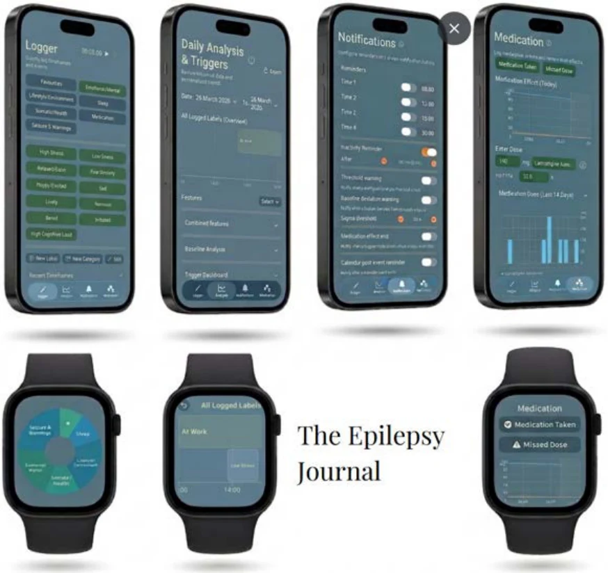
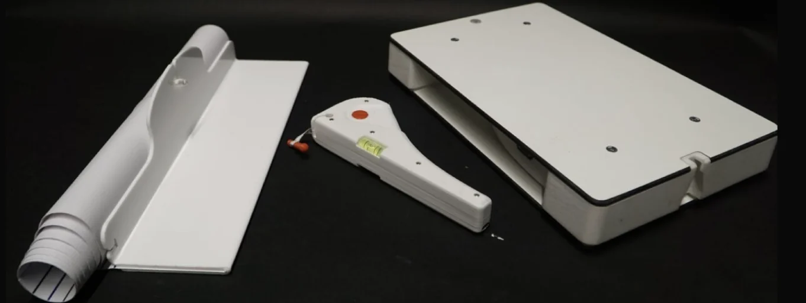
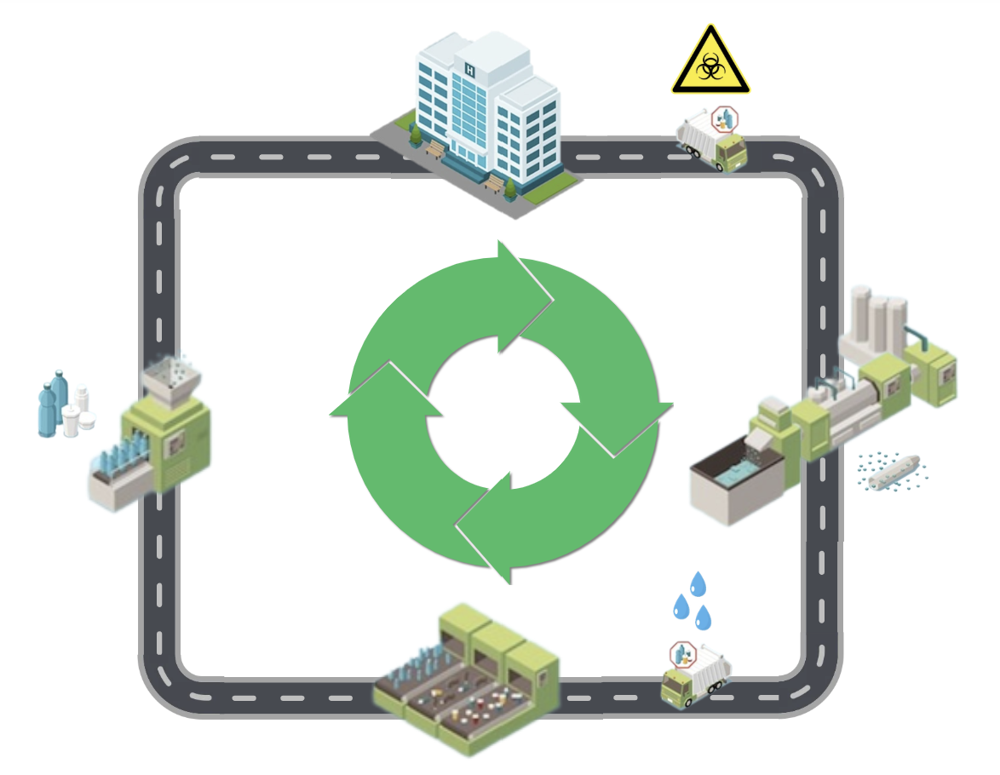
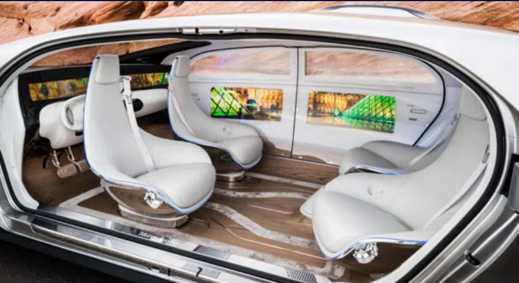
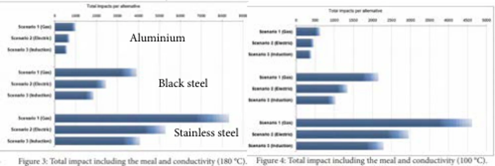
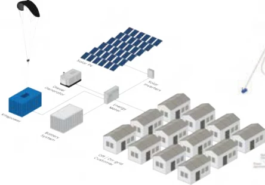
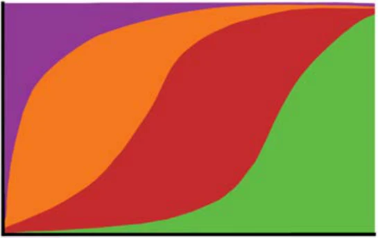
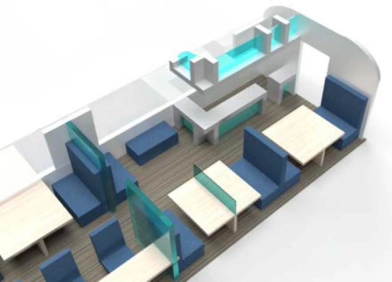
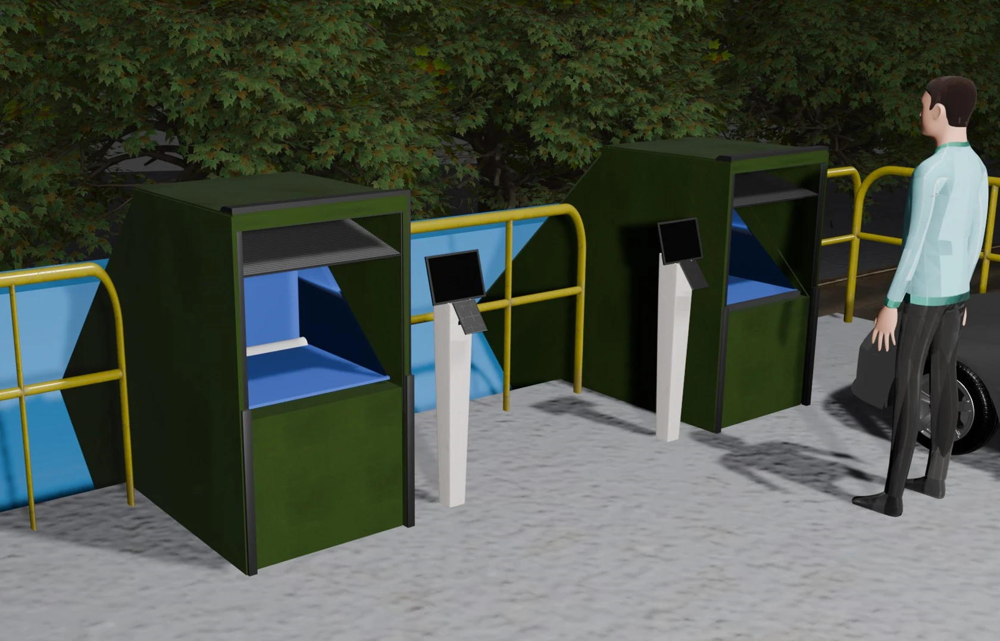
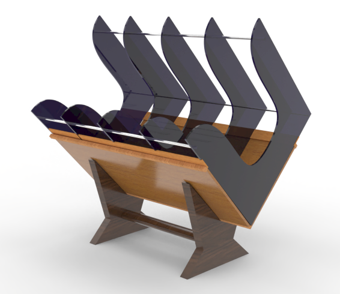

Dirk Lagemaat · Industrial designer
Rotterdam, NetherlandsConsidered design.
Meaningful change.
I turn complex challenges into products, services and systems that work for people. From the first question to a tangible solution.
Explore all projectsProjects
01—10 / Portfolio 2026
The Epilepsy Journal
Connecting daily experiences with physiological data for more personal epilepsy research.

Infant Growth Monitor
An integrated measurement system for community healthcare in rural Cameroon.

Circular Healthcare
Rethinking hospital plastic waste as a circular service and business model.

Vehicle Interior Model
Testing autonomous vehicle interiors against a diverse range of bodies.

Cookware Lifecycle Assessment
Looking beyond material choice to understand cookware’s environmental impact.

Design & Entrepreneurship
Connecting design decisions to the realities of building and growing a business.

Redesigning Innovation
A shared model for a more balanced innovation process at Justid.

The Multi Coach Interior
Three train environments for working, relaxing and travelling together.

The Flipper
Connecting accessible waste disposal with personal feedback for Avalex recycling centres.

Vinyl Record Holder
A freestanding wooden rack that keeps a vinyl collection organised and easy to browse.
Perspective
Seeing the bigger picture.
Making the details work.
My work connects human needs, technical feasibility and the systems around a product. A background in Integrated Product Design at TU Delft allows me to move between research, engineering, prototyping and software development.
About my approach